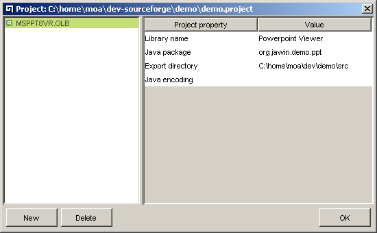
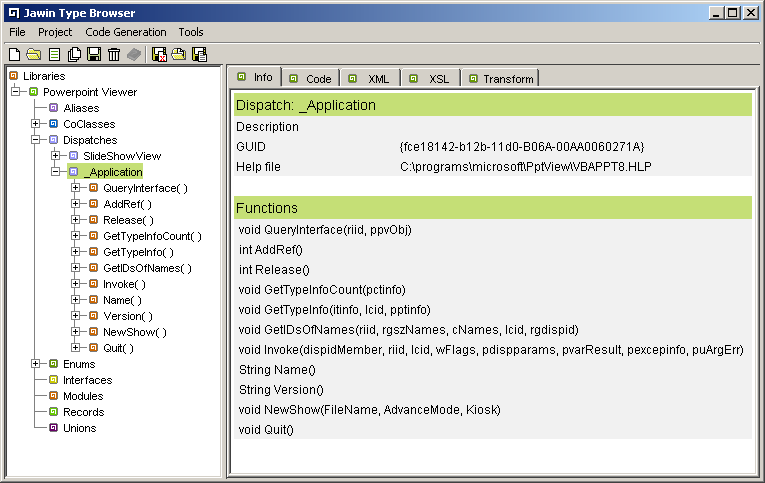

The Jawin Type Browser (JTB) makes it possible to automatically generate the necessary Java stubs for your native code. No COM knowledge is required for using it successfully. JTB is a very powerful tool that combines the richness of the Microsoft type library interface description with XML-transformations for generating code.
The general workflow of JTB is:
JTB offers several opportunities for manual intervention in both the second and the third step, as it makes it possible to both modify the XML-representation and changing the standard stylesheet, and regenerating code in a single step.
It should be clear from this, that JTB is not restricted to generating Jawin stubs, by writing a new set of XSLT stylesheets it could generate wrapper classes for other languages as well, as it is just configuration and stylesheets that binds it to Jawin.
This document starts by describing a few terms used in the COM-world. Thereafter standard usage of JTB is described. If you, after having read this document, still have questions regarding JTB, please direct them to the Jawin mailing list.
JTB works by inspecting the type library information contained in for instance a .dll, an .exe, a .tlb or other resource containing type information (the different resources are discussed below).
The following types are supported by JTB:
| Jawin Type | MS Type | Description | Jawin status |
|---|---|---|---|
| Alias | alias | An alias for another type. JTB will generate a class extending the alias'ed type, thereby effectively working as an alias for this type. | full support, need testing |
| CoClass | coclass | A component object class. Describes the GUID and the supported interfaces for the component class. Pt. JTB just binds the GUID to the generated class. In the future it might be implemented like VB, where the default interface is also bound. | limited support |
| Dispatch | IDispatch interface | A scriptable dispatch or dual interface, with functions invoked through the IDispatch::Invoke method. | 80% - all base types supported, void ptr's and SAFEARRAYS not implemented yet. |
| Enum | enum | A standard enumeration. Each
enum will be made to one stub class, where each enumeration element
is a public static final int | full support |
| Interface | OLE/COM Interface | A COM interface, with functions invoked through vtable entries. | need work, especially for methods with FUNCKIND equal to FUNC_PUREVIRTUAL |
| Module | module | Data and functions not accessed through vtable entries. This may include DLL style calls (non COM) described in a type library. | need test case, work in progress |
| Record | struct | A standard struct (if you are not familiar with C++-terms, you can see a struct as a class with public fields, and without any methods). Each struct will be made to one stub class. | need test case, work in progress |
| Union | union | A standard union (the "union"-term does not exist in Java, if you need an introduction to unions, please refer to a C++ introductory book). | need test case, work in progress |
As far as we know, this table covers all relevant types. If you discover a type library with additional types you need supported, please report it to the Jawin mailing list, and if you supply enough information and/or the relevant type library somebody might be able to help.
Pt. JTB is not able to generate stub code for DLL-entry points, even though Jawin supports it. Support for this is work in progres though, by parsing the header file(s) supplied with the relevant DLL. If you have any experience in this area (eg. if you have succesfully parsed header files with Chaperon or JFlex), we would be pleased to hear from you on the Jawin mailing list.
JTB can extract type library information from the following types of resources:
| Type | std. extensions | Description | Jawin status |
|---|---|---|---|
| DLL | .dll | A DLL containg one or more of the above types AND compiled with type info. | full support |
| Executable | .exe | Like the DLL, the type info is just compiled into an executable. | full support |
| Header | .h | A header file describing an interface. Normally used when compiling C/C++-files. Header files does not contain type library information, but are solely used when generating Jawin stubs for DLL-entry points. This is a text-file, so it is inspectable with a simple editor. | work in progress |
| Object library | .olb | Typically a DLL containing several type libraries. | full support, though some olb's gives problems for different reasons. |
| Type library | .tlb | A description file for one type library. | full support |
| Active X | .ocx | A Active X control, which typically embeds a tlb. If this is the case JTB can generate stub code for it (please be aware that to embed the Active X control, other Active X interfaces, not described by a type library are often required). | full support |
JTB has the same Java requirements as Jawin (pt. JDK 1.3 or higher), and since Jawin is a Win32-interoperability project you probably already guessed that it is a really good idea to run JTB on a Windows machine with COM-support (all versions since Windows 95 has some kind of COM-support, although Windows 95 and NT 4, might require installation of DCOM to get decent COM-support).
JTB is located in the typebrowser-folder in the location
where you unpackaged Jawin. If jar-files are associated with javaw
on your machine you can launch it directly by double clicking on the
jar file, although this is not the recommended way to launch JTB, as
it will typically be launched with javaw, and thereby without the
console to which all information and errors are logged.
For serious usage of JTB it is recommended to launch it from a command
prompt with the following command in the typebrowser-folder
(which requires that you have set up your Java-environment correctly,
and thereby have java.exe in your path):
java -jar jawinBrowser.jar
Two issues are important to be aware of with regard to launching JTB:
typebrowser-folder and subfolders.
All these informations are loaded relative to the working directory
used when launching JTB. It is therefore vital that you change
to the typebrowser-folder before launching JTB (eg.
it is NOT possible to launch it from the root of your Jawin
installation with a command like java -jar
typebrowser/jawinBrowser.jar).java.lang.OutOfMemoryError. If this happens try to increase the
maximum heap size for your JVM, which can be done with the
-Xmx<size>-option. Eg. launch JTB as:java -Xmx256M -jar jawinBrowser.jar
NB: Jawin developers, or other building the Jawin source
instead of using a Jawin-release, should usually not use the launch-directions
in this section. Instead they should use the typebrowser
Ant target described in the
Jawin Developer Information.
The first step after having started JTB is to make a new project from the
Project/New Project-menu. After the location where the
project will be stored have been selected, the following dialog is presented
(in the shown dialog one type library has already been added):

From this dialog the New button brings up the file
browser dialog again, where the file containing a wanted type library
should be found - typically type libraries are contained in the above
mentioned type of files.
When the type library is found, one should fill the properties on the right in picture 1. They should be set as follows
| Property | Description |
|---|---|
| Library name (optional) | If set, the library will be represented with this name in the JTB main window. If not set the filename for the type library will be used. |
| Java package (mandatory) | The package in which the java stubs will be generated. |
| Export directory (mandatory) | The folder where the java stubs will be saved. If the folder does not exist it will be created. Please notice that if a relative folder is specificed (eg. as "src"), it is relative to the working dir (usually jawin), NOT relative to the project location (TODO - perhaps, if possible, it could be an idea to change this?) |
| Java encoding (optional) | For setting UTF-8 or UTF-16 character encoding for the generated java files. In most cases it should be left blank, in which case the generated files will be standard 7-bit ascii. It can be used if another tool requires the generated files to be in a specific format (eg. this is the case for the javadoc-tool, where all java source should have the same encoding to be processed correctly). |
It is possible to specify several files as input for the JTB. Please notice that it is necessary to set the above mentioned properties for each type library individually.
When the Ok-button is clicked, one should keep an eye on the
console-window, as any problems with recognizing the type info, will show
up here. Generally one should be aware that JTB is designed to log
any errors and debug info to the console. The logging level is configurable
as described in the Configuration of the Jawin Type
Browser-section.
The main JTB window will after this look like  The seven types depicted in the navigation tree on the left, are as described earlier, in the Supported Types-section. The info-tab on the right shows information about the selected node.
As mentioned in the introduction, the general workflow of JTB is:
The XML-representation of the type library can be seen on the XML-tab.
Please notice how it changes dynamically with the navigation in the tree
on the left. This makes it possible to "drill down" and study eg. the
XML-representation of a single method or parameter if necessary. Also
notice that this XML-representation can be persisted by using the
Tools/Save XML-menu.
One should also notice that most of the nodes in the navigation tree on the left has right-click popup menus, making it possible to remove for instance a single method from the XML-representation. Please note that any such removals/modifications are not persisted in the project, as JTB rereads the involved type libraries every time the project is opened (for maximum flexibility the right-click menus, and their connected actions are configurable as described in the Configuration of the Jawin Type Browser-section).
The third part of the JTB workflow, transforming the XML-representation into stub code, can happen in two ways as described in the next two sections.
By using the Code Generation-menu, it is possible to
either generate code for the selected node and all its subnodes, by selecting
Generate selected node, or generate all code for all the
type libraries in the project by selecting Generate full code.
After generation the code is available at the code-tab, and can be saved
with the Code Generation/Save Java files-menu. The code
will be saved to the export directory specified earlier.
Generating the stub code this way, JTB uses the default XSLT-transformations for each type (in the default JTB-configuration this is the .xsl-files in the stylesheets/codegen/jawin-folder).
If the default transformations does not cover the need for a specific type library, JTB includes a built-in XSL-editor and a way to manually transform the XML-description.
The build-in XSL-editor is present at the XSL-tab, and offers standard
load and save options from the Tools/Open XSL and
Tools/Save XSL-menu options. A good starting point for
manual transformations is usually to load one of the default .xsl-files
and modify it to suit the specific needs of the given type library.
The editor has code completion, available by typing <xsl:
which will popup a list containing the configured code-templates. The
standard set of templates are of course modifiable/extensible using the
Tools/Configure code completion-menu.
Transformations using the content of the XSL-editor, is done by simply switching to the Transform-tab (keep an eye on the console for any transformation errors). Please be aware that the transformation is done by using the exact content of the XML-tab, which (as mentioned previously) will change with the navigation in the tree on the left. A typical beginners error, when getting no output at all in the Transform tab, is that the content at the XML-tab is different from what one expected.
An advantage of using the exact content of the XML-tab is, that it makes it possible to manually change the XML-representation of the type library before transforming (please notice that this should not be necessary in most scenarios, usually it is the XSL transformation directives that should be modified if the generated stub code is incorrect or incomplete).
Please notice that the content of the Transform-tab is not saved when saving the code. It should be manually copied into the relevant sourcefile(s).
JTB is highly configurable. The default configuration files are placed in the config-folder, and the main configuration file is config.properties. This file contains options for the logging-level, for specifying the default directory for the open dialog, and contains references to the other configuration files.
The different options are well described in the configuration file, so if you think that something should be diffent in how JTB works, please check the different options in the configuration file, you might be lucky that there exists an option that handles your case.
Additional resources about the type library information and COM-technologies
| Copyright (c) 2000-2005, The Jawin Project - LICENSE |
|
| This documentation was written for version: 1.4 beta of the Jawin Type Browser. | |
| $Id: jawintypebrowser.html,v 1.6 2004/08/01 21:34:26 arosii_moa Exp $ |